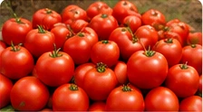
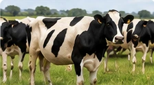
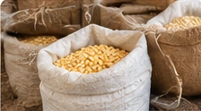
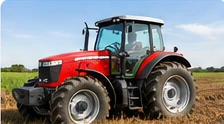
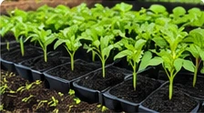
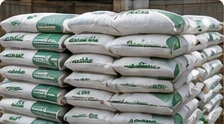

FROM SHAMBA TO BUYER
Find what your farm needs.
Explore crops, livestock, equipment and supplies. Search by product or location, or browse a farming category.
All Listings

Fresh Tomatoes
KSh 40 / kg
⌖ Nakuru
Crops
Dairy Cow (In Calf)
KSh 85,000
⌖ Kiambu
Livestock
Maize (Dry)
KSh 32 / kg
⌖ Uasin Gishu
Crops
Massey Ferguson Tractor
KSh 1,200,000
⌖ Nairobi
Farm Equipment
Tomato Seedlings
KSh 10 / piece
⌖ Machakos
Seeds
DAP Fertiliser 50kg
KSh 6,500
⌖ Nairobi
Farm InputsNo listings match your search. Try a different product or location.
Before arranging a purchase
Compare the price and selling unit carefully: a price per kilogram differs from a price per bag or animal. Confirm the quantity, condition and location, then agree on collection or delivery before paying.
Read how the marketplace works →